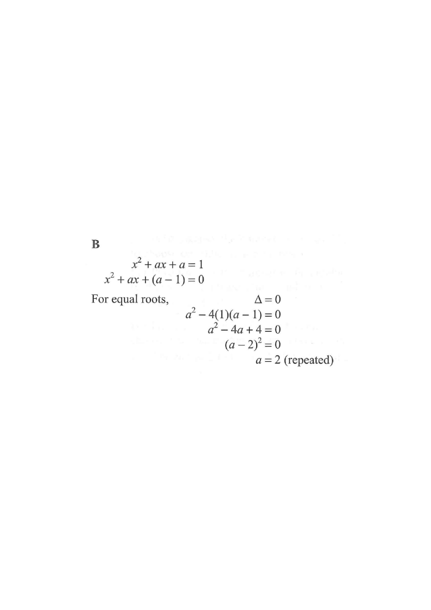

Step 1 — Rewrite the equation in standard form.

Move every term to one side so the equation reads \(ax^{2}+bx+c=0\):
So here \(a_{\text{coeff}}=1\), \(b=a\) and \(c=a-1\).
A quadratic has equal (repeated) roots exactly when
Only one value of \(a\) makes the discriminant zero.
\(a=2\) matches option B. (Options C and D would come from a different equation, e.g. \(a^{2}-4a=0\).)
Question. Let \(k\) be a constant. If the quadratic equation \(x^{2}+2kx+k+6=0\) has equal roots, then \(k=\)
A. \(-2\) or \(3\) B. \(2\) or \(-3\) C. \(-2\) only D. \(3\) only (1 mark)